Checkmark is a CLI tool designed to streamline your Markdown workflow. It provides a suite of features including auto-formatting, linting, AI-assisted document review, link checking, spell checking, and AI-assisted document composition.

Checkmark is a tool designed to help maintain high-quality Markdown documentation. It offers a range of commands to automate various tasks related to formatting, checking, and reviewing Markdown files:
Make sure you install the latest Cargo version. If you are using Windows, ensure that Perl is installed and added to the system's PATH. You may consider using Strawberry Perl for this purpose. Next, run the following command:
cargo install --git https://github.com/vvvar/checkmark.git
NOTE: Pre-built as well as installation from crates.io is planned
You can verify the installation with the following command:
checkmark --version
Checkmark has a bunch of different commands. Each serves its purpose. Below you will find descriptions of all available commands.
fmtRecursively auto-format all Markdown files inside the current directory with:
checkmark fmt .
Verify that all Markdown files have been formatted with:
checkmark fmt . --check
Additionally, you can print a diff to see what exactly will be re-formatted:
checkmark fmt . --check --show-diff
Run this command to see a full list of formatting options:
checkmark fmt --help
reviewcheckmark is capable of reviewing your documentation using Open AI. First, you need to provide an OpenAI API Key. You can do it either via environment variable:
export OPEN_AI_API_KEY=<YOUR_API_KEY>
or by creating a .env file with it(see this if you're not familiar). See here how to find an API key.
They, you can recursively review all your Markdown documents with:
checkmark review .
This will:
take all your Markdown files
split them in chunks (by headings)
one by one send them to Open.AI for review with the following prompt:
Review this project documentation for grammar, readability and clarity of the content. Provide a summary and improvement suggestions. Each suggestion should identify the issue, its location, and a proposed fix. Each suggestion should have 'description', 'original', and 'replacement'
collect results and show them to you in the form of suggestions. For example:
note[Review]: Add a brief description for each command to provide more context for users.
┌─ /Users/vvoinov/Documents/repos/md-checker/README.html:14:1
│
14 │ - **spelling**: Check your documents for spelling errors.
│ ^^^^^^^^^^^^^^^^^^^^^^^^^^^^^^^^^^^^^^^^^^^^^^^^^^^^^^^^^
│
= Consider following change:
- **spelling**: Checks documents for spelling errors.
note[Review]: Consider adding a brief explanation of the CI mode and its purpose.
┌─ /Users/vvoinov/Documents/repos/md-checker/README.html:15:1
│
15 │ - **CI mode**: Turns off interactive prompts and outputs reports in a format suitable for CI/CD pipelines.
│ ^^^^^^^^^^^^^^^^^^^^^^^^^^^^^^^^^^^^^^^^^^^^^^^^^^^^^^^^^^^^^^^^^^^^^^^^^^^^^^^^^^^^^^^^^^^^^^^^^^^^^^^^^^
│
= Consider following change:
- **CI mode**: Turns off interactive prompts and outputs reports in a format suitable for CI/CD pipelines. This mode is designed to facilitate integration with CI/CD processes.
You can control the level of creativity of the AI with (values between 0 and 100 are accepted):
checkmark review . --creativity 80
You can provide a custom prompt for Open.AI with:
checkmark review . --prompt "Review grammar"
Run this command to see a full list of review options:
checkmark review --help
composecheckmark is capable of composing documentation using Open.AI based on your prompts with:
checkmark compose --prompt "Write me a dummy documentation" --output DOCUMENT.MD
This will generate a file DOCUMENT.MD with content generated, using your prompt.
You can control the level of creativity of an AI with(values between 0 and 100 are accepted):
checkmark review . --creativity 80
Additionally, you can provide a file and ask checkmark to use it as an additional context for your prompt. For example:
checkmark compose --context README.html --prompt "Re-write this file in a manner of pirates" --output DOCUMENT.MD
This will take README.html, rewrite it using your prompt and store it in DOCUMENT.MD.
Run this command to see a full list of review options:
checkmark compose --help
linkcheckRecursively check all links in Markdown files inside the current directory with:
checkmark linkcheck .
This will extract all hyperlinks, file links(for e.x. \[File\]\(./image.png\)), and e-mails and check whether they are reachable or not.
If you want to ignore some links, use:
checkmark linkcheck . --ignore-wildcards "**example.com**"
This will tell the checkmark to avoid checking all links that match a **example.com** pattern. You can use this to ignore files as well.
Run this command to see a full list of link checker options:
checkmark linkcheck --help
lintRecursively lint all Markdown files inside the current directory with:
checkmark lint .
This will test all your files against linting rules. Linting rules are ported from markdownlint(work in progress).
Run this command to see a full list of linter options:
checkmark lint --help
spellcheckRecursively spell-check all Markdown files inside the current directory with:
checkmark spellcheck .
This will check all Markdown files for spelling errors. If you need to white-list words:
checkmark spellcheck . --words-whitelist checkmark,OPEN_AI_API_KEY
This will not print spelling errors for the words "checkmark" and "OPEN_AI_API_KEY" anymore.
Run this command to see a full list of review options:
checkmark spellcheck --help
generate-configcheckmark can be controlled via CLI and config file. Although it is completely fine to use CLI, when setting up a checkmark in a project it is useful to have all settings under version control. checkmark has a command that can generate a default config file for you:
checkmark generate-config
Executing this command will generate a file named checkmark.toml in the current directory. The generated checkmark.toml file contains a full list of options with their default values. Each configuration option has documentation that describes how to use it. You can modify it to suit your requirements. You can store this file in the following folders(lookup will be done exactly in this order, the first match is picked up):
configconfcfg.githubIn these folders, checkmark will look for either a file called checkmark.toml or .checkmark.toml. Choose the location and name that fits best your needs. If none of these locations or names fits you, then you can provide a path to your config file via the command line:
checkmark <command> --config "/path/to/your/config.toml"
You can perform any check mentioned above on a remote Git repository. For that, provide link to the remote Git repo instead of a local file path like this:
checkmark fmt --check https://github.com/vvvar/checkmark.git
Or use SSH:
checkmark fmt --check git@github.com:vvvar/checkmark.git
NOTE: checkmark will try to use your existing SSH keys in the default location (
~/.ssh). If you're having problems ensure that you can do a normal clone using your local git client.
For information about contribution, please refer to the CONTRIBUTING.html file.
For support information, please refer to the SUPPORT.html file.